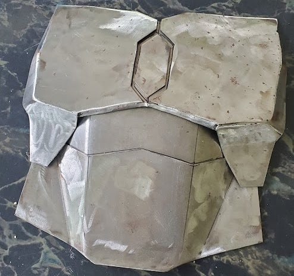
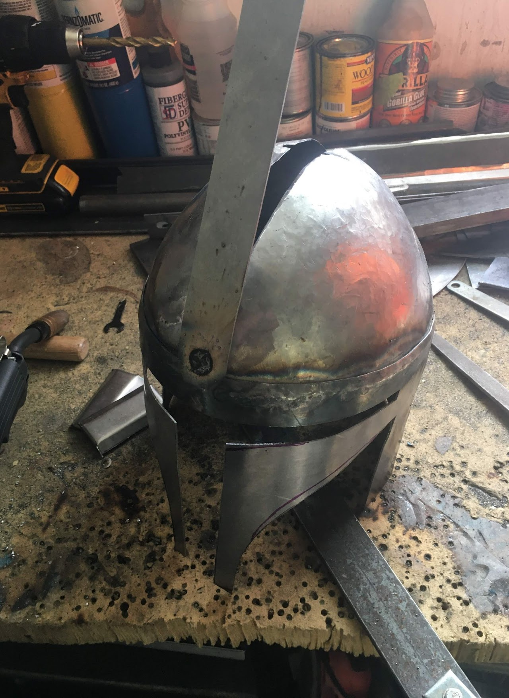
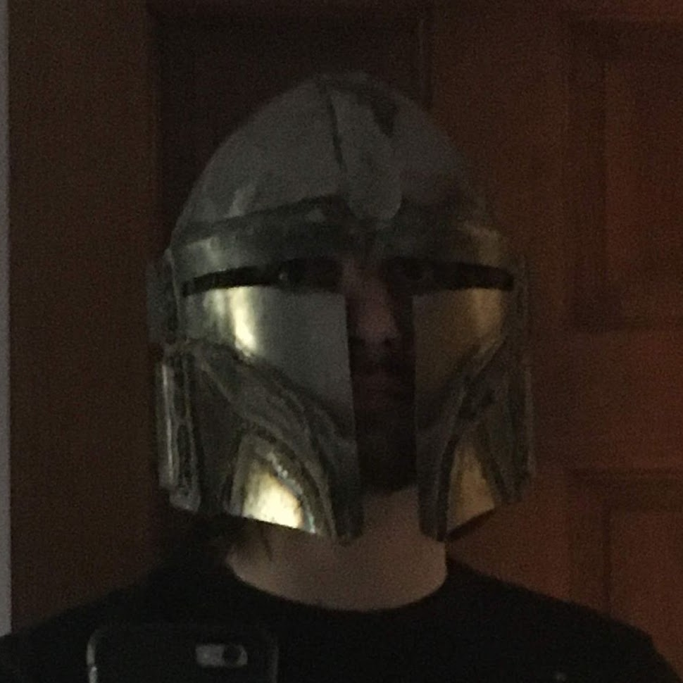
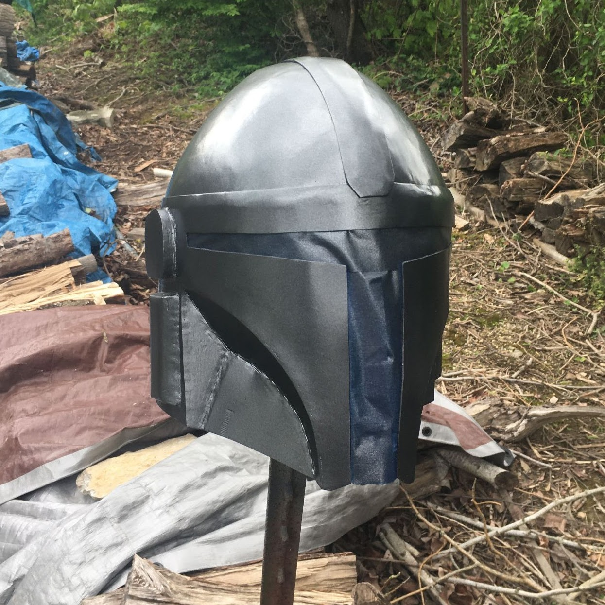
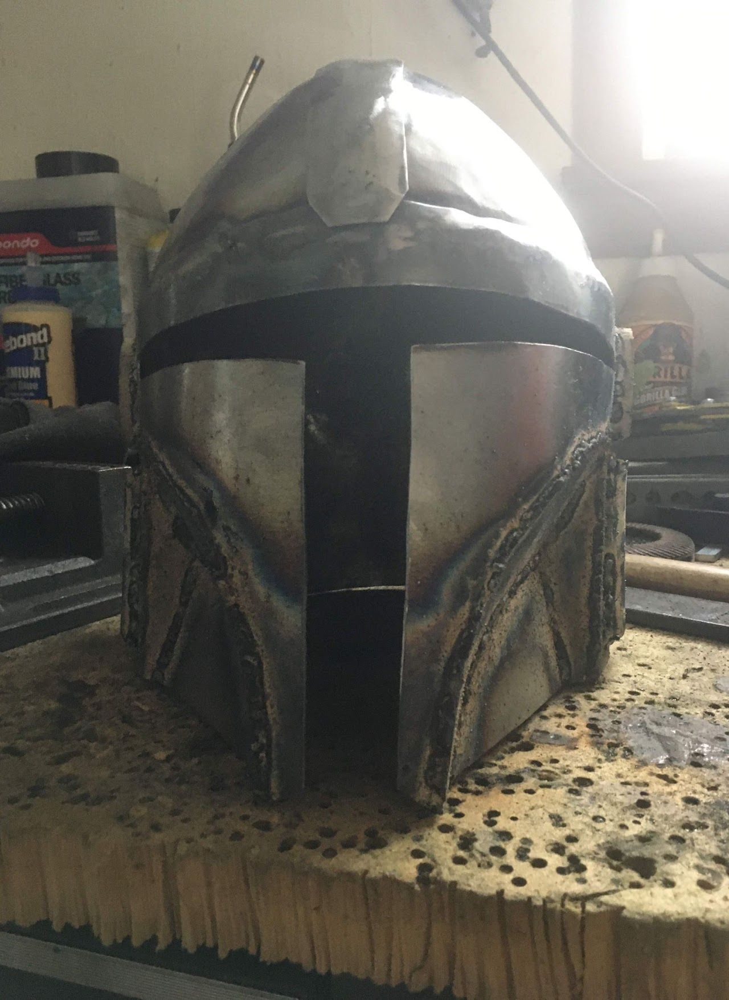
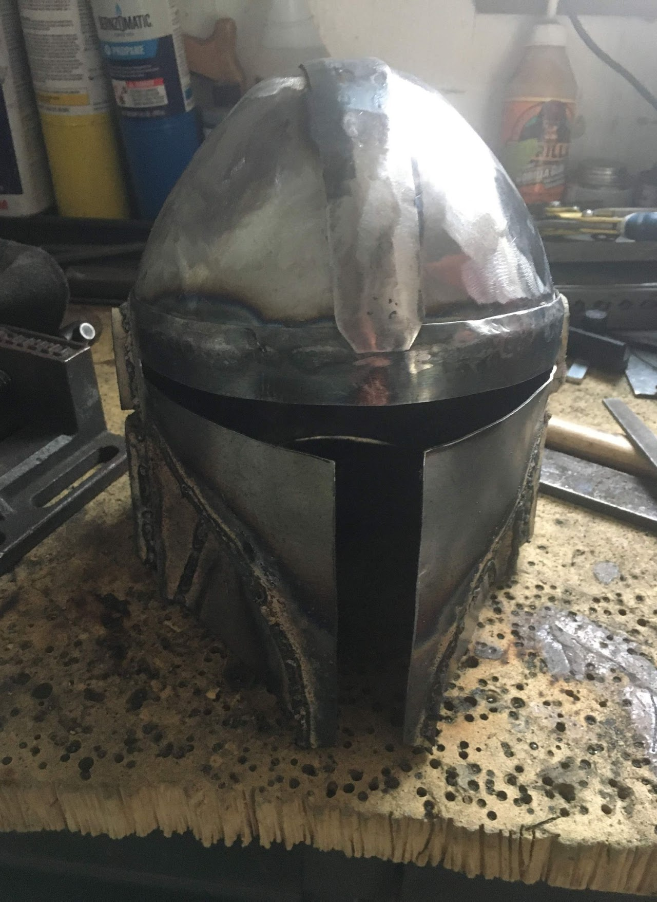
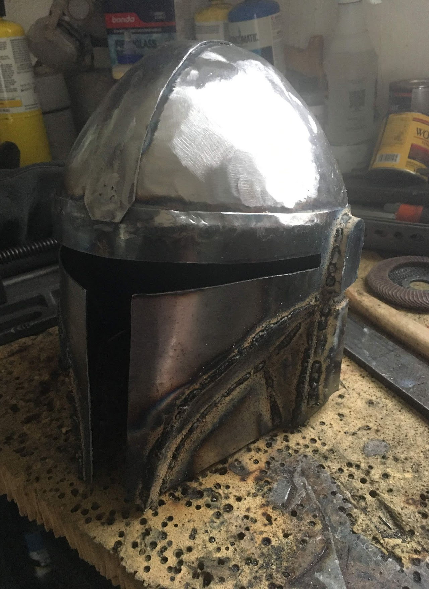

I fabricated both a helmet and a chest plate from 18-gauge steel. The
helmet proved to be quite a challenge as the dome had to be hammered and
planished into compound curves. These curves proved to be quite
difficult to both make in general, but also to make mirrored. Many
times, I had to go back and forth to try and get both sides to be a
perfect match.
Spot welding and determining an order of operations were crucial for
hiding the welds and improving the overall visual quality.





